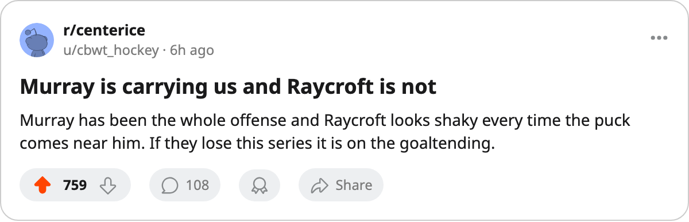

SERIES REPORT: Boston 1, Tampa Bay 1 -- Murray's 7 points carry the Bruins home
The Bruins have the series level and Game 3 tonight, with their top line producing and their goaltender not.
 Ray CallumSenior correspondent · Home Ice Network
Ray CallumSenior correspondent · Home Ice Network Glen Murray85 has 7 points in two games and the first-round series between
Glen Murray85 has 7 points in two games and the first-round series between  Boston Bruins and
Boston Bruins and  Tampa Bay Lightning is level at 1-1. Game 3 is tonight in Boston.
Tampa Bay Lightning is level at 1-1. Game 3 is tonight in Boston.
Tampa Bay won the opener 3-2 on April 8, and Boston answered with a 5-3 win on April 10. Murray has 3 goals and 4 assists across the two.  Mike Knuble78 has 2 goals and 3 assists,
Mike Knuble78 has 2 goals and 3 assists,  Joe Thornton90 2 and 2,
Joe Thornton90 2 and 2,  Nick Boynton74 one assist.
Nick Boynton74 one assist.
Tampa Bay's answer is  Cory Stillman85, who has 4 goals in the two games. Dave Andreychuk has 3 assists, Bill Lindsay73 a goal and an assist,
Cory Stillman85, who has 4 goals in the two games. Dave Andreychuk has 3 assists, Bill Lindsay73 a goal and an assist,  Dan Boyle81 2 assists.
Dan Boyle81 2 assists.
 Andrew Raycroft84 has a 3.00 goals-against and a .850 save percentage for Boston;
Andrew Raycroft84 has a 3.00 goals-against and a .850 save percentage for Boston;  Nikolai Khabibulin92 has a 3.50 goals-against and a .865 save percentage for Tampa Bay. Raycroft has had 10 injury spells this season.
Nikolai Khabibulin92 has a 3.50 goals-against and a .865 save percentage for Tampa Bay. Raycroft has had 10 injury spells this season.
The Lightning went 3-1-2 against Boston in the regular season, and four of the six meetings were one-goal games. Boston finished 33-29-9 with 97 points, sixth in the East; Tampa Bay finished 39-25-7 with 107 points and third.
Boston gets Game 3 tonight and Game 4 on April 14, both at home. The Bruins need the goaltending to match the top line, or the series swings back to Tampa Bay with Murray's scoring as the only thing holding it up.
